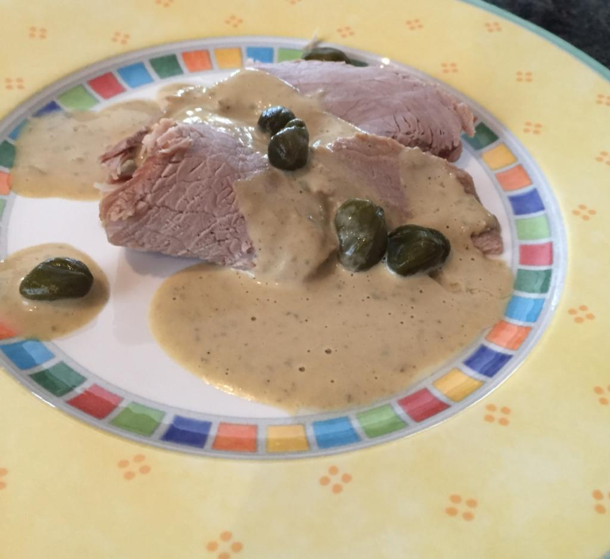
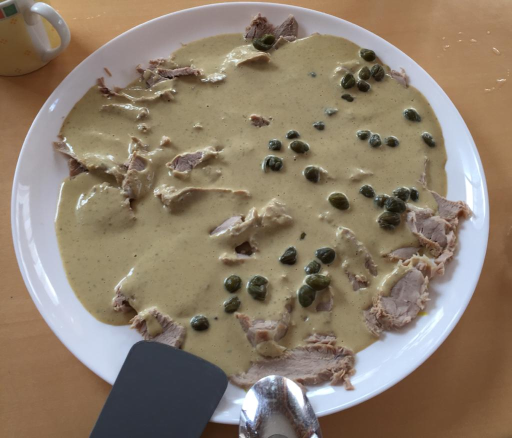

Vitello Tonnato (Simon Moser)


Schwierigkeit:
Dauer:
Zutaten
Fleisch
- 500g Kalbnuss
- Rindsuppe
- Suppengrün
- 1 TL Salz
Sauce
- 1/2 Zitrone auspressen
- ein bisschen von der Rindsuppe
- 2 EL Essig
- 150g Thunfisch
- 3 eingelegte Sardellenfilets
- 2 Eigelb
- 200ml Olivenöl
- 2 EL Kapern
- Salz und Pfeffer
Dekoration
- 1 El Kapern
- 1 Zitronenscheibe
Zubereitung
Fleisch
- Die Kalbsnuss in einen Topf legen und Wasser und das Suppengrün dazugeben.
- Das Fleisch im Kelomat kochen und in der Rindsuppe abkühlen lassen.
Sauce
- Den Thunfisch abtropfen lassen und die Sardellenfilets abspülen und klein schneiden.
- Thunfisch, Sardellen, Eigelb, Kapern, Zitonensaft und Essig in einen Mixer geben und fein pürieren, einige Esslöffel des Kochsuds vom Kalbfleisch unterrühren und nach und nach das Olivenöl einfließen lassen. Zu einer dicken Sauce rühren. Mit Salz und Pfeffer abschmecken.
Anrichten
- Das Kalbfleisch in dünne Scheiben schneiden und auf einer Platte anrichten.
- Gleichmäßig mit Sauce bedecken.
- Anschließend noch 3-4 Stunden durchziehen lassen.
- Kurz vor dem servieren noch mit Kapern und Zitronen garnieren.